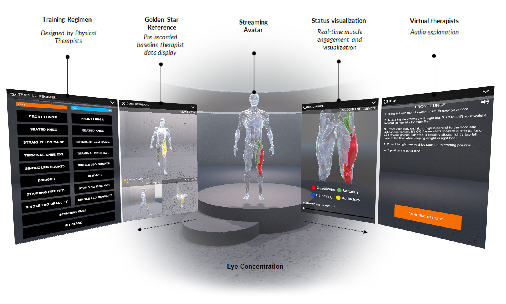
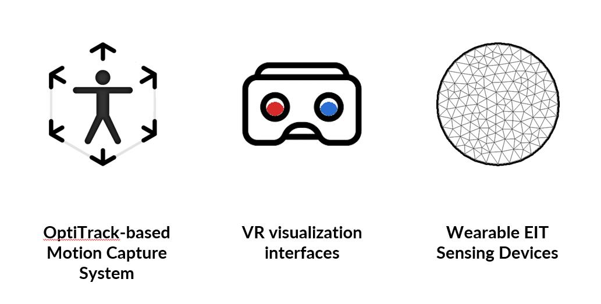
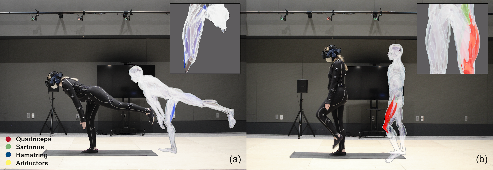
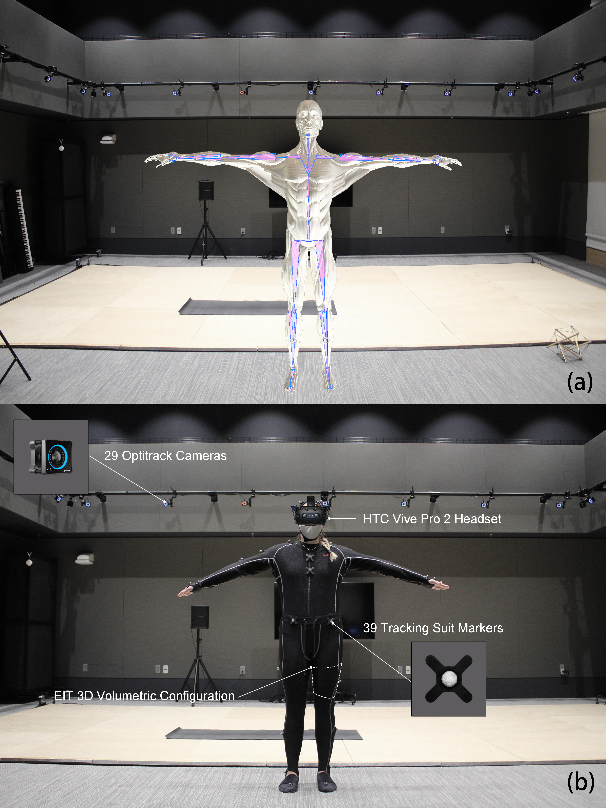
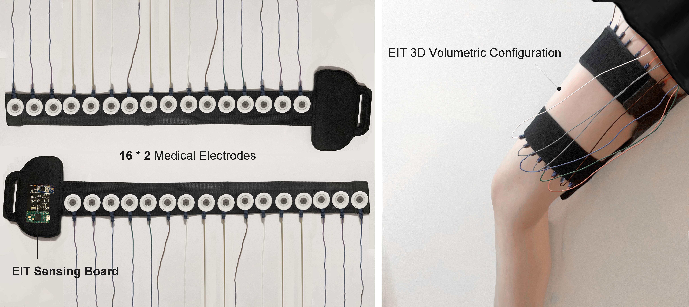
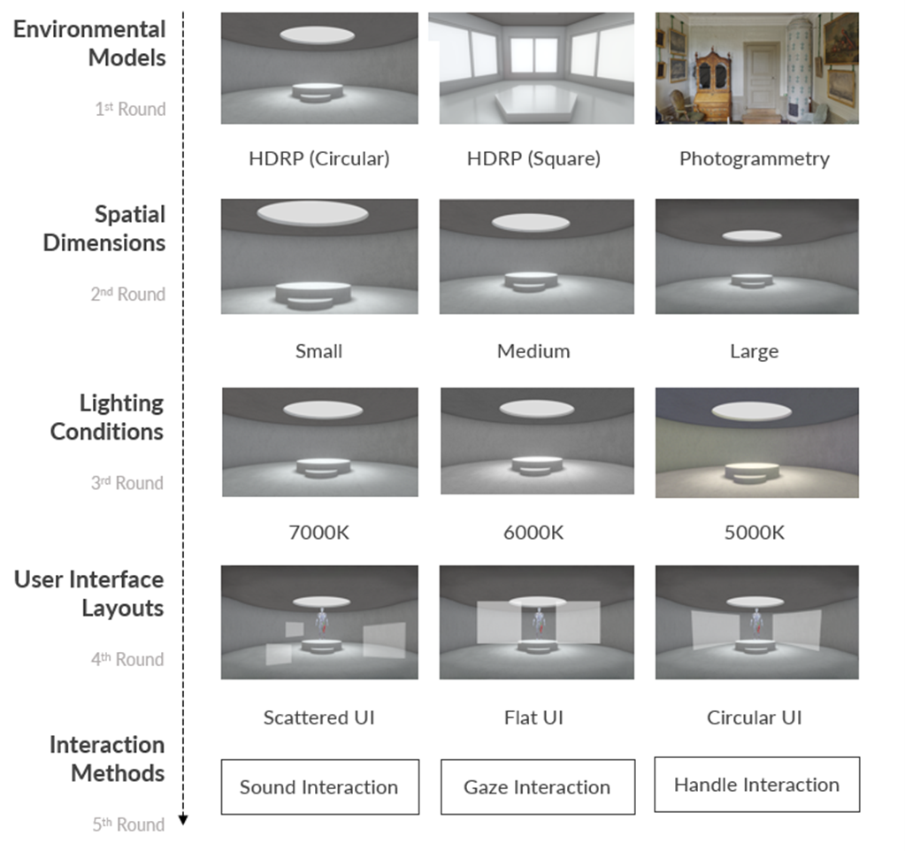
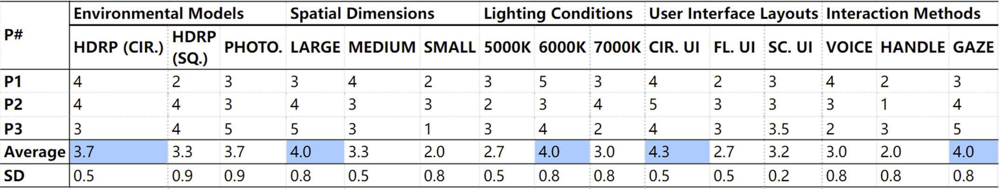
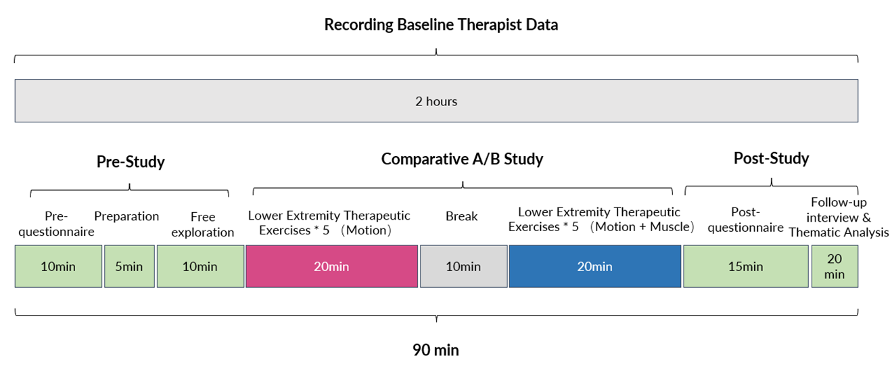
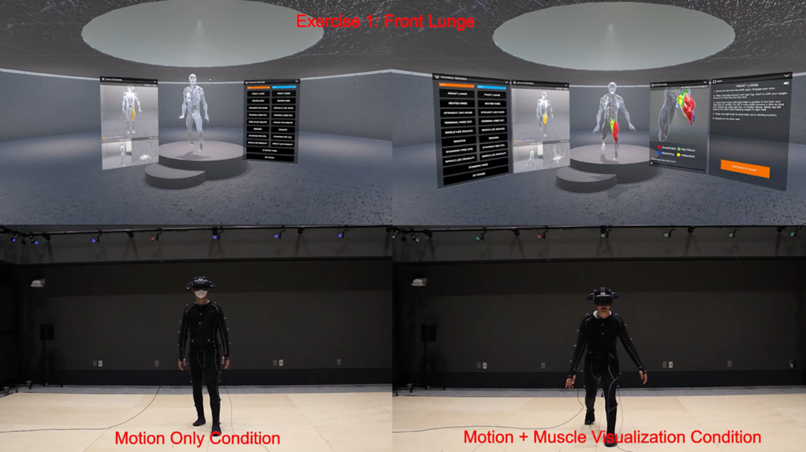

|
A Virtual Reality Rehabilitation Interface -with Augmented Sensing, Interaction, and Visualization Techniques- Yuxuan Lei
Final project for the MIT class
4.550/4.570
Computation Design Lab |
|
|  |
VR Rehabilitation Simulator Interface All figures created by author unless otherwise noted |
Project Overview
With the advanced development of multimodal sensing and rendering technologies, Virtual Reality (VR) has attracted enormous interest in unsupervised physical rehabilitation owing to its decisive advantages in turning traditional physical touchpoints into digital simulated empathy machinery. The shift from treatment rooms to the VR realm allows the scarce resource of rehabilitation services to reach a wider population. While traditional physical space designed the external environment, the virtual display satisfied users with self-awareness through virtual avatars and multisensory feedback. Thus, extensive research investigated innovative sensory input techniques, particularly motion tracking and mapping.
|
||
|  |
Fig 1. VR Rehabilitation Simulator |
|  |
Fig 2. VR Rehabilitation Simulator in Use |
|  |
Fig 3. OptiTrack Motion Tracking System Setup |
|  |
Fig 4. Thigh-based EIT Sensing Prototype |
|  |
Fig 5. Design Elements and Profiles |
|
Fig 6. VR Rehabilitation Simulator Interface |
|
|  |
Fig 7. Design Profile Evaluation |
|  |
Fig 8. Study 1 Procedure |
|  |
Fig 9. The VR Rehabilitation Simulator Screen Recording and On-Site Filming |
|
Future Development Drawn suggestions from the user research, the project will include an algorithmic-based motion evaluation feature for real-time body gesture correction and instruction in the VR interface. In addition, a custom avatar, such as a female skeleton, will also be considered as the next step. Moreover, the research methods of this project will be strengthened by applying the software on other mediums, such as AR, etc.
|
2013 All rights reserved. Last modified: Jan. 30, 2014 by TN